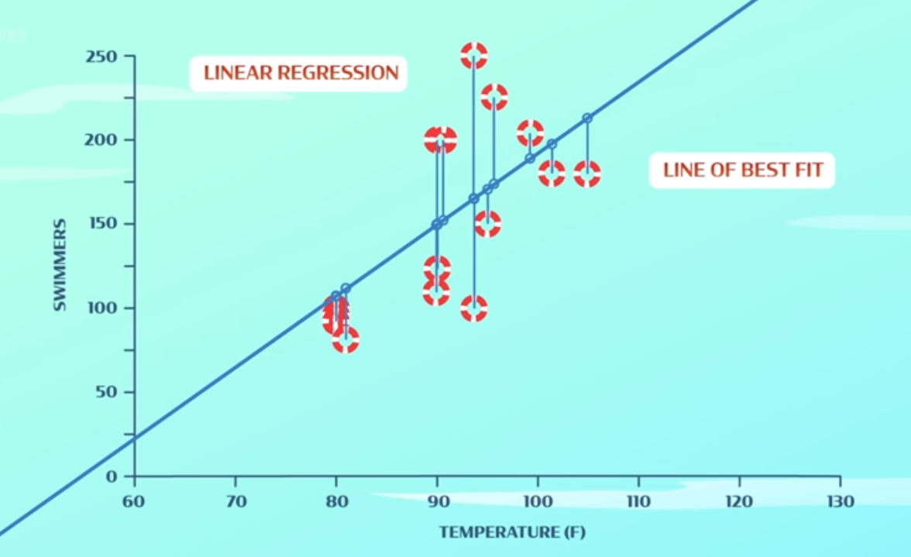

Backpropagation and Optimization
Some neural networks are now able to do some tasks even
better than humans can ex. playing chess, predicting weather.
Neural networks need to learn how to solve problems by making mistakes.
They handle mistakes by using an algorithm backpropagation.
Backpropagation: Making sure that all the neurons that contributed to an error get their math adjusted
Two main parts of neural networks:
● Architecture: Neurons and their connections
● Weights: Numbers that fine tune how the neurons compute an output
If a mistake is made, that often means that the weights are not adjusted
correctly --> they need to be updated to make better predictions next time.
Optimization: The task of finding the best weights for a neural network architecture
Linear regression is used by computers to find the line of best fit used to make predictions.
Weights are set to random numbers at first and adjusted accordingly.
The sum of the distances between the line and each of the data points is called the error.
As more features are added, more dimensions are added to the graph, and it gets harder to visualize.
NEURAL NETWORKS!!!
By connecting together many simple neurons with weights, a neural network can learn
to solve complicated problems --> the line of best fit becomes a multidimensional function

In some neural networks, the output layer may have a lot of neurons.
the difference between the actual and predicted answer is then called the loss function (it’s more than one number)
Backpropagation: Look at the loss function --> assign blame to neurons in previous layers of network
More blame => More weight adjustment